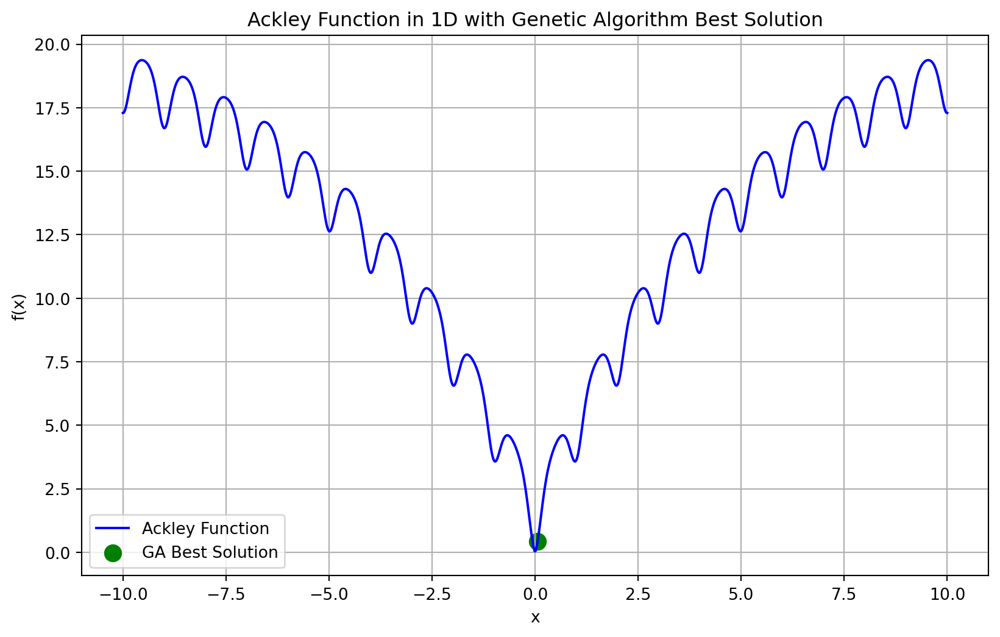

# Genetic Algorithm Ackley Example (1D)
import numpy as np
import random
import time
import matplotlib.pyplot as plt
# Define the necessary global variables
pop_size = 50
num_generations = 100
crossover_rate = 0.7
mutation_rate = 0.02
num_parents_mating = 10
num_players = 3
best_obj_val = float('inf')
best_sol = None
# Ackley function (1D)
def ackley(x):
a = 20
b = 0.2
c = 2 * np.pi
term1 = -a * np.exp(-b * np.sqrt(np.mean(np.square(x))))
term2 = -np.exp(np.mean(np.cos(c * np.array(x))))
return term1 + term2 + a + np.exp(1)Genetic Algorithms
Genetic Algorithms
If you could ‘mutate’ one skill you have to be even better, which one would it be? And if you could ‘crossover’ with someone else’s skill, what would you pick?
Genetic Algorithms (GAs) are optimization techniques inspired by the process of natural selection and evolution.
Population: A set of potential solutions (individuals) to the problem. Genes/Chromosomes: Each individual is represented by a chromosome (a string of genes), typically encoded as a binary, real-number, or symbolic representation.
Objective: To evolve the population toward better solutions by mimicking evolutionary processes such as selection, crossover, and mutation.
Diagram illustrating the flow of a genetic algorithm: initial population → selection → crossover → mutation → new population.
Key Steps
- Initialization: Randomly generate an initial population of individuals (solutions).
- Selection: Choose the fittest individuals based on a fitness function that measures solution quality.
- Crossover (Recombination): Combine parts of two parent solutions to create offspring (new solutions).
- Mutation: Introduce random changes to an individual to maintain diversity and explore new parts of the solution space.
- Replacement: Replace the old population with the new one, ensuring improvement over generations.
- Termination: Continue until a stopping condition (e.g., number of generations or convergence) is met.
Advantages
- Global Search: Capable of exploring large solution spaces and avoiding local optima.
- Flexibility: Can be applied to many types of optimization problems, including those with non-linear or non-differentiable objectives.
- Heuristic Nature: Useful when problem-solving methods like calculus-based optimization are not feasible.
Genetic Algorithms Defined
Each iteration during the convergence process is called a generation. GA will search more than one candidate solution per generation.
All the solutions of each generation are called a population indicating that there are many candidate solutions.
Each solution is called a chromosome or an individual.
Each subsolution of a solution is called a gene.
Fitness is the objective function value.
Selection is the selection based on the objective function value.
Optimization patterned on evolution
- Maintain a population of solutions.
- “Survival of the fittest”.
Evolution of an improving solution
- The population evolves over many generations.
- The fittest population members are more likely to reproduce and create offspring with their genetic material.
- Population fitness improves through the generations.
The relationship between population \(s\), chromosome \(si\), and gene \(si,j\)
- \(s\) represents the population (a set of solutions),
- \(s_i\) represents a chromosome (a solution),
- \(s_{ij}\) represents a gene (a subsolution),
- \(m\) represents the number of chromosomes in the population (also called population size, and
- \(n\) represents the number of subsolutions in a chromosome.
- The objective value of each chromosome will also be transformed to a value called the fitnes value by a so-called fitness function.

The Relationships between Parents and Children
- Each current solution selected by the selection operator is called a parent, while each new candidate solution is called an offspring during the convergence process.
- The parents s’ will be selected by the selection operator from the current population s at iteration t. The fitness values of all the chromosomes will also be calculated by the selection operator.
- Once the parents are selected by the selection operator, the crossover and mutation operators are used to generate a new population \(v\), which is called the offspring of the parents \(s’\).
- The offspring at iteration \(t\) will become the current population s of iteration \(t+1\). This is referred to as the reproduction process.

The strategies of the selection, crossover, and mutation operators of GA: (a) using only the selection operator and (b) using all the three operators.
GA will first randomly select some of the chromosomes based on the fitness value of each chromosome.
Shows the situation in which only the selection operator is used, i.e., no other transition operators are used. In this case, the distribution of all the chromosomes will be shifted and changed from left to right on the x-axis from generation t=1 to generation t=3.
This means that the average objective value of the population will be increased while the variance is decreased. If GA uses only the selection operator but none of the transition operators (e.g., crossover or mutation), it will not generate any new candidate solutions even though the average objective value of all the chromosomes is raised from 1.5 to 2.5.
Shows that if GA uses not only the selection operator to select better chromosomes for the next generation but also the crossover and mutation operators as the transition operators to generate new chromosomes for the population, this makes it possible for GA to find better candidate solutions. In this example, the average objective value of all the chromosomes will be increased from 1.5 to 3, while the best objective value will exceed 3.

The strategy of the transition operator of GA. (a) How the crossover operator works. (b) How the mutation operator works.
GA will typically apply the crossover and mutation operators to the chromosomes selected by the selection operator.
Two-dimensional landscape will be used as compared to one dimensional used in traditional methods, simulated annealing or tabu search.

GA Algorithm
- Initialization: Each chromosome represents a potential solution. In our case, it’s a binary vector indicating whether a DC is selected or not.
- Fitness Function: The fitness of a solution is calculated based on how many plants can be served by the selected DCs and whether the total investment remains within the budget.
- Selection: Select a set of solutions based on their fitness to proceed to the next generation.
- Crossover: Perform crossover between pairs of selected solutions to create new offspring solutions.
- Mutation: Randomly mutate some solutions to introduce diversity.
- Termination: Stop when a satisfactory solution is found or after a fixed number of generations.

The Probability Calculation
- The probability of each chromosome being elected as a parent can be computed as follows: \[p_i = \frac{f_i}{\sum_{j=1}^{m} f_j}\]
- Fitness \(f_i\) of member i as a proportion of sum of fitness of all population members, suggesting that \(p_i = \frac{\text{fit}}{\sum \text{fit}}\)
Refining Genetic Algorithms
- There’s no perfect setup for GA parameters. Experiment with combinations and monitor performance to find the best results for your specific problem.
- GA Parameters Are Crucial: The effectiveness of GA depends heavily on carefully tuning parameters like population size, mutation rate, and the number of generations.
- Population Size: For more complex problems, use larger populations (e.g., 1000–2000 individuals)
- Mutation Rate: A low probability, typically 0.001 to 0.002 per gene.
- Number of Generations: For more generations (e.g., 1000–2000 generations).
- Fitness Function: Carefully tailored to the specific problem being solved, as it guides the selection process.
- Selection Method: rank-based linear selection or proportional selection can be used.
- Crossover Mechanism: Single-point crossover chosen at a random location
Fitness Function Alternatives in Heuristic Models
Fitness measures and selection mechanisms together determine the quality of offspring (solutions) in evolutionary or heuristic algorithms.
- While fitness measures are problem-specific, several reasonable alternatives often exist.
- It’s essential to tailor the fitness function to the specific goals of the problem (e.g., precision, speed, or robustness).
Selection strategies (e.g., roulette wheel, tournament selection) could also have significant impacts on solution quality, and finding the right balance often requires experimentation.
Selecting the Right Fitness Function: Some fitness measures work significantly better than others depending on the problem.
Leverage prior knowledge or insights from similar problems to guide fitness function selection.
Trial and Error: Expect to experiment with different fitness measures to find the one that best suits your specific problem.
Common Distance Measures for Comparing Solutions to a Target:
- Sum of Squared Differences: A measure of the total squared deviation of each pixel from the target, commonly used when larger errors should be penalized more.
- Euclidean Distance: The square root of the sum of squared differences, providing a more intuitive “distance” measure in the image space.
- Sum of Absolute Pixel Differences: A simpler alternative that sums the absolute differences for each pixel, often less sensitive to outliers.
- Maximum Absolute Pixel Difference: Focuses on the largest deviation, highlighting the worst pixel match.
Approaches to Optimize the Mutation Rate
- Hyperparameter Tuning: Use various fixed mutation rates and evaluate the performance of the GA over multiple runs to identify the best one. This is the simplest method but can be time-consuming as it involves manual experimentation.
- Dynamic Mutation Rate: Adjust the mutation rate dynamically during the evolution process. For example, you can start with a high mutation rate to encourage exploration and gradually reduce it as the algorithm converges.
- Self-Adaptive Mutation Rate: Introduce a mechanism in the GA where each individual in the population has its own mutation rate, which evolves over time. The mutation rate itself becomes part of the genetic material.
- Cross-Validation: Use techniques like k-fold cross-validation to evaluate the impact of different mutation rates and find the one that generalizes the best.
Comparing GA to SA
- Multiple search directions: Compared to the single-solution-based metaheuristic algorithms (e.g., SA) that search only one solution at a time, GA searches for more than one solution at a time during the convergence process. Since GA will search for multiple directions or regions at a time, its search diversity will normally be much higher than single-solution-based metaheuristics that search for only one direction or region at a time during the convergence process. Selection operator: Another characteristic of GA is that it uses the selection and fitness function operators to determine solutions to be searched, not just based on the objective value of each solution. This kind of mechanism keeps the search process of GA from looking for the best solution in the population all the time so that it will not always choose the solution with the best objective or fitness value to search its neighbors again and again. Consequently, GA will not easily get stuck in local optima at early iterations.
- Crossover operator: This operator is one of the transition operators of GA, which plays the role of exchanging information between parent chromosomes, such as moving portions of the genes of a chromosome to another. This kind of mechanism allows GA to restructure its solutions to form new solutions in such a way that the structure of the new solutions is not confined to the structure of the initial solutions and may even inherit partial structures from their parents; as a consequence, the search process of GA will quickly jump from one region to another in the solution space during the convergence process.
- Mutation operator: This operator is another transition operator of GA, which ensures that the search process of GA is capable of escaping from a local optimum by changing the value of some genes randomly. Of course, this kind of mechanism will also play the role of fine-tuning the chromosomes of GA because only a few genes will be changed at a time.
Genetic Algorithms
- To compare Simulated Annealing (SA) with Genetic Algorithms (GA), we can implement a Genetic Algorithm for the same optimization problem (Ackley function) and then compare the two approaches based on:
- Performance: Compare the final optimized values.
- Convergence Speed: How fast each algorithm converges to a solution.
- Exploration vs. Exploitation: How each method balances searching new areas (exploration) versus refining the current solution (exploitation).
Genetic Algorithm for Ackley Function
- The key components of a genetic algorithm include:
- Population: A set of candidate solutions.
- Selection: Selecting parents based on their fitness (Ackley function value).
- Crossover: Combining parents to produce offspring.
- Mutation: Introducing random changes to maintain diversity.
- Fitness Function: The objective function we are minimizing, which is the Ackley function in this case.
Comparison with Simulated Annealing (SA)
- Population-based vs. Single Solution:
- GA maintains and evolves a population of solutions.
- SA operates on a single solution and modifies it over time.
- Exploration Strategy:
- GA uses crossover and mutation to explore the solution space, encouraging diversity.
- SA explores the space by making probabilistic changes to a single solution, allowing uphill moves early on (controlled by the temperature).
- Deterministic vs. Probabilistic:
- GA uses deterministic selection mechanisms, such as tournament selection, and a fixed mutation rate.
- SA uses a temperature mechanism to probabilistically accept worse solutions early in the search.
- Convergence:
- GA uses generations and selection pressure to converge on the best solution over time.
- SA cools down gradually, converging based on the temperature schedule.
GA Example Ackley
Startup Commands
Initiation Function (I)
- A population of solutions is initialized using the init_ga function, where each solution is a random number between -10 and 10, as per the problem domain.
# Initialization function (I) to set the starting point
def init_ga(pop_size):
return np.random.uniform(-10, 10, (pop_size, 1))Evaluation Function (E)
- The fitness of each solution in the population is evaluated using the Ackley function.The best solution found so far is updated by comparing the current population’s fitness values.
# Evaluation function (E)
def evaluate(pop):
return np.array([ackley(ind) for ind in pop])Determination (D): Update Function
- This function, update_best_sol, is responsible for keeping track of the best solution found so far in a genetic algorithm. It compares the fitness values of the current population (curr_obj_vals) to the global best objective value (best_obj_val).
- It identifies the index (best_idx) of the individual in the current population with the lowest objective value (best fitness) using np.argmin.
- If this individual’s objective value is better (lower) than the current global best (best_obj_val), it updates best_obj_val to this new lower value and updates best_sol to the corresponding individual from the current population.
- This ensures that best_sol and best_obj_val always store the best solution and its fitness value found across all generations during the algorithm’s execution. The use of global allows the function to modify these variables outside its local scope.
# Update best solution function
def update_best_sol(curr_pop, curr_obj_vals):
global best_sol, best_obj_val
best_idx = np.argmin(curr_obj_vals)
if curr_obj_vals[best_idx] < best_obj_val:
best_obj_val = curr_obj_vals[best_idx]
best_sol = curr_pop[best_idx]Determination (D): Selection Function
- Selection: A subset of the population is selected for reproduction using a tournament selection process. This selection favors individuals with better fitness, helping to propagate good solutions.
- This code implements a tournament selection mechanism in a genetic algorithm to select individuals for reproduction based on their fitness values.
- For each individual in the current population (curr_pop), a tournament is conducted by randomly selecting a subset of individuals (of size num_players) without replacement.
- Within this subset, the individual with the best fitness value (lowest objective value in curr_obj_vals) is identified using np.argmin and added to the selected population (selected_pop). This process ensures that fitter individuals have a higher chance of being chosen, promoting the propagation of good solutions while maintaining diversity through randomness.
- The function returns the newly selected population as a NumPy array.
# Determination (D)
# Selection function using tournament selection
def select(curr_pop, curr_obj_vals, num_players):
selected_pop = []
for _ in range(len(curr_pop)):
tournament = np.random.choice(len(curr_pop), num_players, replace=False)
best_idx = tournament[np.argmin(curr_obj_vals[tournament])]
selected_pop.append(curr_pop[best_idx])
return np.array(selected_pop)Transition (T): Crossover Function
In genetic algorithms, the transition function refers to the combined operations of crossover and mutation that generate a new population (offspring) from the current population. The transition function first applies crossover to exchange genetic material between selected parent solutions, creating new offspring, and then applies mutation to introduce small random changes in the offspring, maintaining diversity and enabling exploration of the solution space. This ensures a balance between exploitation of good solutions (via crossover) and exploration of new solutions (via mutation).
Crossover: Pairs of solutions from the selected population are combined to create new offspring by mixing parts of the parent solutions.
A new population (new_pop) is initialized as a copy of the current population (pop). The loop iterates over the population in pairs. For each pair, a random number is generated using np.random.rand(). If this number is less than the crossover_rate, crossover occurs:
- A crossover point is chosen randomly (here, using np.random.randint(1)), which specifies where the two parent solutions will exchange segments. The segments of the two parent solutions from the crossover point onward are swapped, creating two new offspring solutions.
- If the random number is greater than the crossover_rate, no crossover occurs, and the parent solutions remain unchanged. The function returns the new_pop containing the modified population after applying the crossover operation.
# Transition function (T): Crossover and Mutation
# Crossover function (T)
def crossover(pop, crossover_rate):
new_pop = pop.copy()
for i in range(0, len(pop) - 1, 2):
if np.random.rand() < crossover_rate:
crossover_point = np.random.randint(1)
new_pop[i, crossover_point:], new_pop[i + 1, crossover_point:] = (
pop[i + 1, crossover_point:],
pop[i, crossover_point:]
)
return new_popTransition (T): Mutation Function
- Mutation: Random mutations are introduced in the offspring solutions to maintain diversity and avoid premature convergence.
- It introduces random changes to a population of solutions in a genetic algorithm. It iterates over each individual in the population (pop) and, with a probability specified by the mutation_rate, replaces the current individual with a new value randomly drawn from a uniform distribution between -10 and 10. This random alteration helps maintain diversity in the population, enabling the genetic algorithm to explore new areas of the solution space and avoid premature convergence. The modified population is returned at the end of the function.
# Mutation function (M)
def mutation(pop, mutation_rate):
for i in range(len(pop)):
if np.random.rand() < mutation_rate:
pop[i] = np.random.uniform(-10, 10)
return popMain Loop
- The algorithm iterates through a fixed number of generations (iterations). Each generation represents an iteration of evolving the population to improve the solutions.
- The new population (after crossover and mutation) replaces the old one for the next generation.
# Genetic Algorithm function (D)
def genetic_algorithm():
global best_sol, best_obj_val
pop = init_ga(pop_size)
for generation in range(num_generations):
obj_vals = evaluate(pop)
update_best_sol(pop, obj_vals)
selected_pop = select(pop, obj_vals, num_players)
offspring_pop = crossover(selected_pop, crossover_rate)
mutated_pop = mutation(offspring_pop, mutation_rate)
pop = mutated_pop
return best_sol, best_obj_valMain Execution
# Main execution
start_time = time.time()
best_solution, best_value = genetic_algorithm()
end_time = time.time()
execution_time = end_time - start_timeOutput (O)
# Output (O)
print(f"Optimal solution: {best_solution}")
print(f"Optimal value: {best_value}")
print(f"Execution time for Genetic Algorithm: {execution_time:.6f} seconds")
# Plot the Ackley function and genetic algorithm progress
x_values = np.linspace(-10, 10, 1000)
y_values = [ackley([x]) for x in x_values]
plt.figure(figsize=(10, 6))
plt.plot(x_values, y_values, label="Ackley Function", color='b')
plt.scatter(best_solution[0], best_value, color='green', label='GA Best Solution', s=100)
plt.title("Ackley Function in 1D with Genetic Algorithm Best Solution")
plt.xlabel("x")
plt.ylabel("f(x)")
plt.legend()
plt.grid(True)
plt.show()Optimal solution: [-0.20703494]
Optimal value: 2.223874200573516
Execution time for Genetic Algorithm: 0.107507 seconds
GA example One Max
import numpy as np
import random
import matplotlib.pyplot as plt
import time
# Define the necessary global variables
num_bits = 10
pop_size = 50
num_generations = 100
crossover_rate = 0.7
mutation_rate = 0.01
num_players = 3
# Evaluation Function (E)
def one_max(sol):
return sum(sol)
# Initialization function (I)
def initialize_population(pop_size, num_bits):
return np.random.randint(0, 2, (pop_size, num_bits))
# Selection function using tournament selection (D)
def select(population, fitness_vals, num_players):
selected_pop = []
for _ in range(len(population)):
tournament = np.random.choice(len(population), num_players, replace=False)
best_idx = tournament[np.argmax(fitness_vals[tournament])]
selected_pop.append(population[best_idx])
return np.array(selected_pop)
# Crossover function (T)
def crossover(population, crossover_rate):
new_population = population.copy()
for i in range(0, len(population) - 1, 2):
if random.random() < crossover_rate:
crossover_point = np.random.randint(1, num_bits)
new_population[i, crossover_point:], new_population[i + 1, crossover_point:] = (
population[i + 1, crossover_point:],
population[i, crossover_point:]
)
return new_population
# Mutation function (T)
def mutate(population, mutation_rate):
for i in range(len(population)):
for j in range(num_bits):
if random.random() < mutation_rate:
population[i, j] = 1 - population[i, j] # Flip the bit
return population
# Genetic Algorithm function
def genetic_algorithm(num_bits, pop_size, num_generations, crossover_rate, mutation_rate):
population = initialize_population(pop_size, num_bits)
best_sol, best_value = None, 0
value_history = []
for generation in range(num_generations):
fitness_vals = np.array([one_max(ind) for ind in population])
best_idx = np.argmax(fitness_vals)
#Update solution (D)
if fitness_vals[best_idx] > best_value:
best_sol, best_value = population[best_idx], fitness_vals[best_idx]
value_history.append(best_value)
selected_pop = select(population, fitness_vals, num_players)
offspring_pop = crossover(selected_pop, crossover_rate)
population = mutate(offspring_pop, mutation_rate)
return best_sol, best_value, value_history
# Main execution
start_time = time.time()
best_sol, best_value, value_history = genetic_algorithm(num_bits, pop_size, num_generations, crossover_rate, mutation_rate)
end_time = time.time()
execution_time = end_time - start_time
# Output results (O)
print(f"Best solution: {best_sol}")
print(f"Best fitness (one-max value): {best_value}")
print(f"Execution time: {execution_time:.6f} seconds")
# Plot the progress of the genetic algorithm
plt.figure(figsize=(10, 6))
plt.plot(value_history, marker='o', linestyle='-', color='b', label='Best One-Max Value')
plt.title("Genetic Algorithm Progress for One-Max Problem")
plt.xlabel("Generation")
plt.ylabel("Best Fitness")
plt.grid(True)
plt.legend()
plt.show()Best solution: [1 1 1 1 1 1 1 1 1 1]
Best fitness (one-max value): 10
Execution time: 0.060024 seconds
Using AI
- Use the following prompt on a generative AI, like chatGPT, to learn more about the topics covered.
- Concept of Genetic Algorithms: Explain the biological inspiration behind Genetic Algorithms. How do the concepts of selection, crossover, and mutation in GA mimic natural evolution?
- Write a Python implementation of a Genetic Algorithm to minimize a simple quadratic function \(f(x) = x^2\) include steps for initialization, selection, crossover, mutation, and termination. How does the choice of parameters like mutation rate and population size affect the outcome?
- Comparison with Simulated Annealing: Compare Genetic Algorithms to Simulated Annealing for solving the Ackley function. Discuss their strengths and weaknesses in terms of convergence speed, exploration, and exploitation.
- Real-World Applications: Identify three real-world problems where Genetic Algorithms are commonly used (e.g., scheduling, vehicle routing, or portfolio optimization). Why are GAs particularly suited for these problems?
- Parameter Tuning: Discuss how to determine the optimal mutation rate and crossover probability for a given problem. Explore techniques like self-adaptive mutation rates and their impact on performance.
- How does the diversity of the population change as the genetic algorithm progresses over generations?
Conclusions
- Our discussions on Genetic Algorithms (GA) provide a comprehensive exploration of one of the most versatile and biologically inspired optimization techniques. GA mimics the principles of natural selection and evolution, employing operators like selection, crossover, and mutation to iteratively refine solutions within a population. The method’s ability to balance exploration (via genetic diversity) and exploitation (via selection pressure) makes it particularly effective for solving complex, non-linear, and multimodal optimization problems. Key advantages include its flexibility to adapt to a wide range of applications, such as scheduling, portfolio optimization, and function minimization, and its capacity to avoid local optima by maintaining a diverse population. However, success depends heavily on careful parameter tuning, including population size, mutation rate, and crossover probability. By comparing GA with other methods like Simulated Annealing, the slides highlight GA’s strengths in global search and parallel exploration. Ultimately, Genetic Algorithms emerge as a powerful heuristic, especially when the optimization landscape demands both creativity and robustness in the search for solutions.